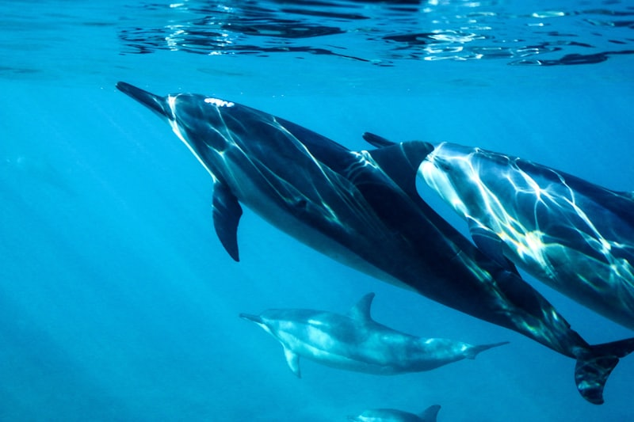

← Préparation Phase 3 — Réception La Grande-Motte La Grande Motte → La Grande Motte 11 mai 2025 → 29 mai 2025 Articles  Dauphins au large de Saint-Tropez ! 22/05/2025 Un peu de faune — flamants roses ! 20/05/2025 Porquerolles — vent de 25 noeuds 18/05/2025 Premier mouillage — Calanque de Morgiou 13/05/2025 Jour J — Livraison du Wang'ap 12/05/2025